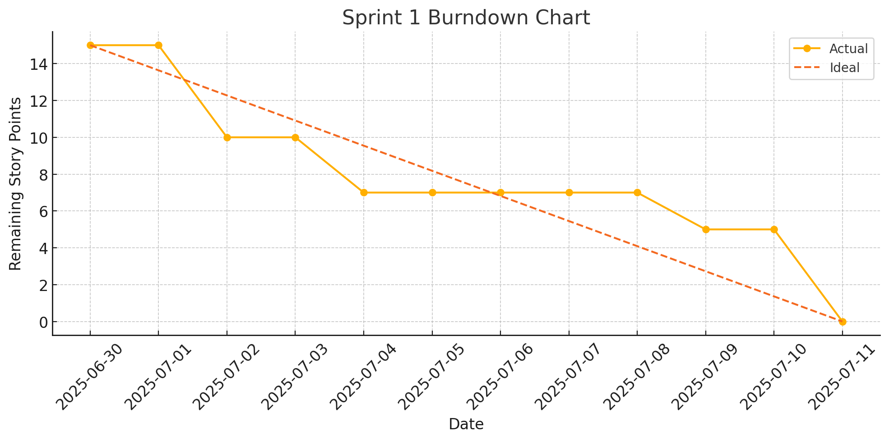
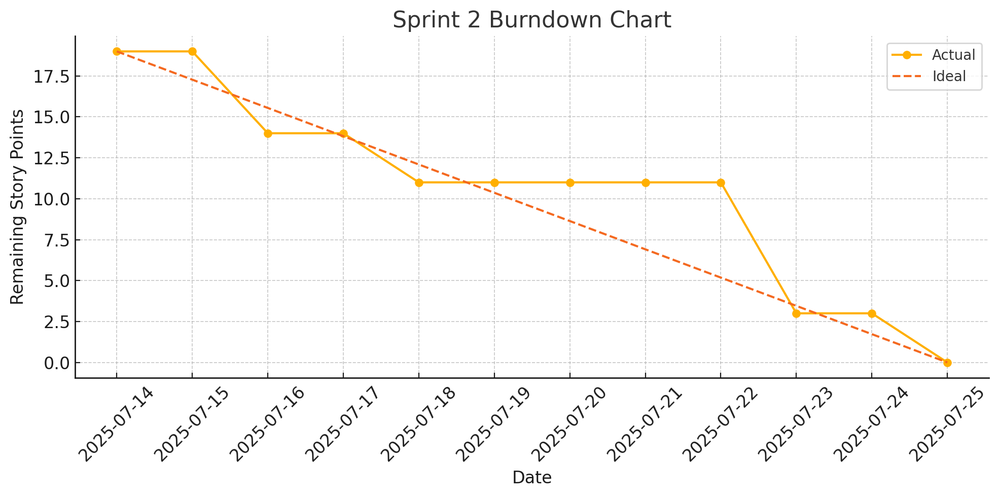
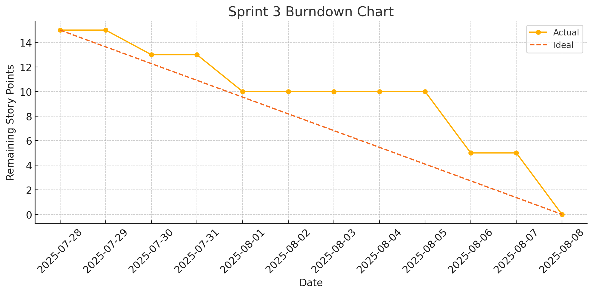
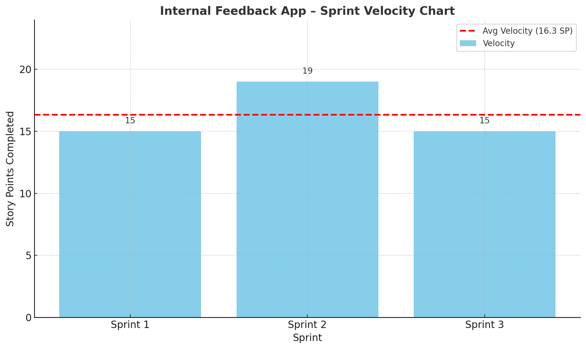
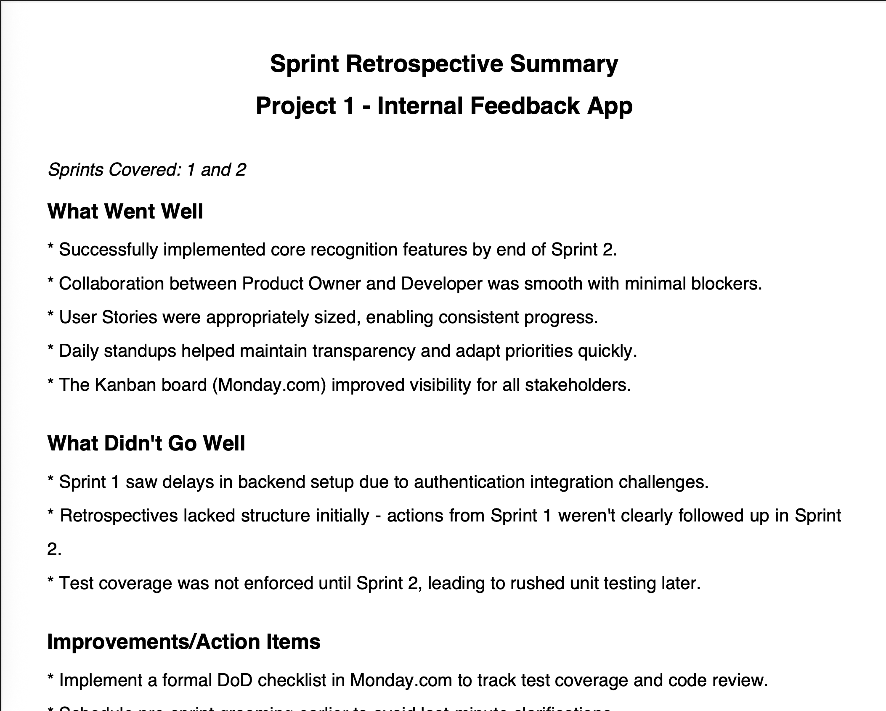

Product Vision
Create a lightweight app for team members to share feedback and give recognition, fostering a culture of transparency and appreciation.
Agile Metrics
Click below to view Agile reports in fullscreen.

Burndown Chart – Sprint 1

Burndown Chart – Sprint 2

Burndown Chart – Sprint 3

Velocity Chart – Internal Feedback App
Interactive Product Backlog
This is the live Product Backlog view powered by Monday.com. You can explore tasks, user stories, and priorities in real time.
Sprint Backlog
This section shows what the team committed to during Sprint 1, pulled from the Product Backlog.
Sprint Retrospective – Sprint 1 & 2
Click below to view the PDF in fullscreen.

Sprint 1 & 2 Retrospective (PDF)
✔️ Definition of Done (DoD)
- Code committed and merged
- Unit tested with >80% coverage
- Peer-reviewed
- Deployed to staging environment
- Demoed and accepted by Product Owner